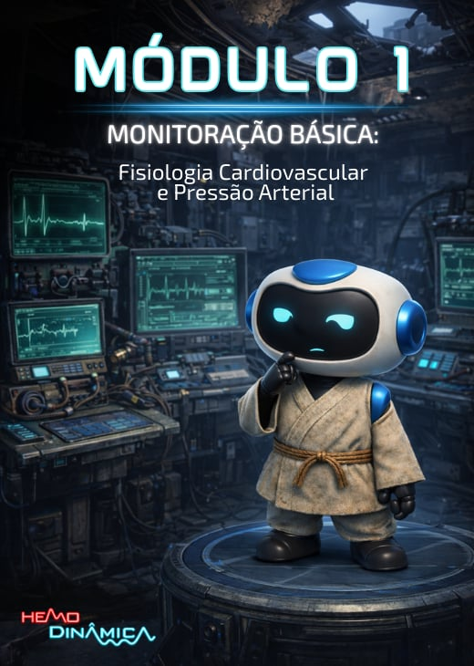

 Formação em Hemodinâmica · Anest-Review
Formação em Hemodinâmica · Anest-Review
Domine a hemodinâmica do seu paciente — do monitor à melhor conduta.
Curso teórico-prático de monitorização e manejo hemodinâmico. Um passo a passo do muito básico ao avançado — da fisiologia cardiovascular ao cateter de artéria pulmonar.
33 videoaulas · e crescendo
Apostilas de Revisão
Web + App
Garantia de 7 dias
Para todo médico — do estudante ao especialista. Começa do básico, chega ao avançado.